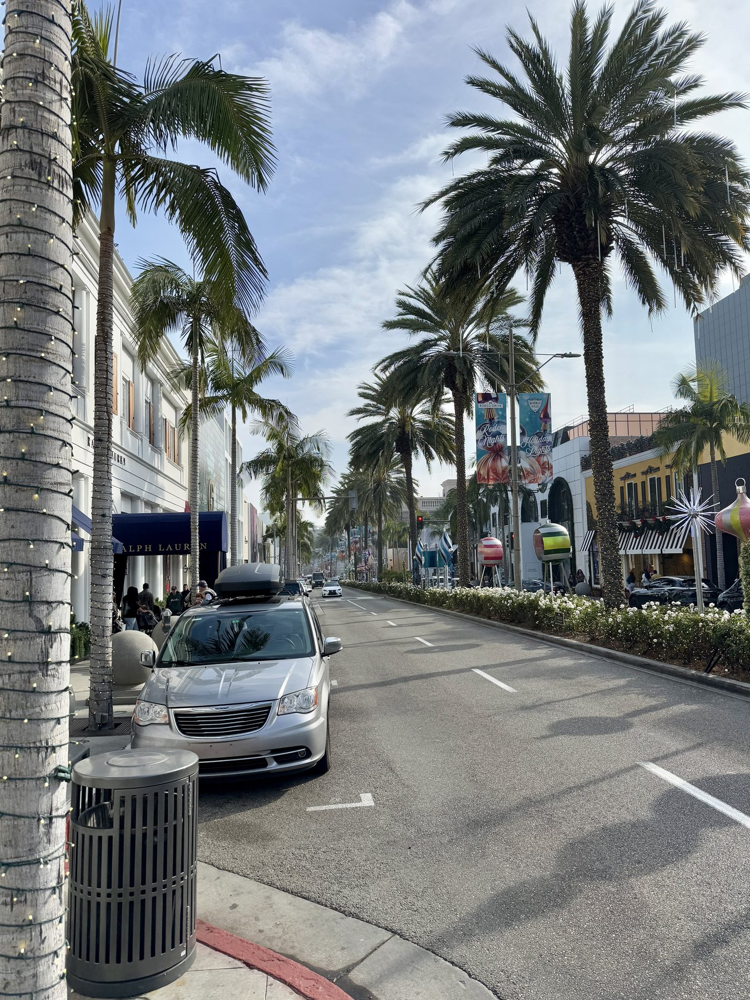

We had seen the Washington and Oregon coasts as far south as Coos Bay. Returning there and driving Highway 1 to Los Angeles would complete the entire U.S. Pacific Coast for us.
We had also been wintering in Florida for years. PCH-Ex used up some familiar Florida time to keep our travels fresh, then ended in Miami with the minivan facing the Atlantic. Coast to coast.
PCH-Ex at a glance
- 77 days
- Approximately 12,000 miles
- November 2024–January 2025
- Full-trip travelers: Cassie and David
- Spencer joined from Las Vegas through Utah and Arizona, departing in Phoenix
Leg I · Cincinnati to Fresno
We returned first to the Memphis KOA—the scene of Mosquitogeddon—and succeeded. The sleeping area now had a mattress topper, the rear seats were removed for storage, and a new soft-sided cooler, Jackery 1000 and rechargeable Ryobi work fan had joined the travel kit.
At a service-free I-40 rest area in Oklahoma, the Jackery powered a hot lunch. It was a small moment with a large implication: we were learning to make ordinary life work wherever we stopped.
We looped north on I-25 to add Colorado to the trip, stayed near Taos, passed through Cimarron Canyon, saw wild bighorn sheep and visited the Very Large Array. The Gila wilderness brought more rough roads and ancient cliff dwellings. Tucson brought warmth, Saguaro National Park and a tarantula walking beside the road.
Near Lake Havasu, another campground tried to refuse the minivan. We eventually won the argument, but did not feel welcome. Then Mojave National Preserve gave us a lava tube and our first major sand dunes before we reached Death Valley.
Death Valley changes the list
Furnace Creek was a Spartan base for three nights. Each day we rolled out into a park that felt massive even by national-park standards—and astonishingly empty. We explored Ubehebe Crater and Twenty Mule Team Canyon, where the Jackery made Ranger Coffee, a habit borrowed from safari.
We did not reach Racetrack Playa. The access road demanded a suitable high-clearance 4x4. David began posing the minivan beside “4x4 only” signs. The joke became a capabilities list for a future rig that could get us to Alaska.


Death Valley also started our phone-based night-sky photography. The results were modest, but the vehicle made an excellent stable platform for 30-second exposures.
Heading north, Google Maps sent us from Kernville onto roughly five miles of generally maintained two-track forest road. The terrain was less frightening than the isolation. The Forest Service office was closed, locals had warned of snow, and a breakdown could mean a 10- to 15-mile walk back.
We reached the Trail of 100 Giants, later saw General Sherman, and retreated from altitude, cold and snow to Fresno. Two nights indoors with a full rest day marked our first double-night stay—and our anniversary. Fresno: famously romantic.
Leg II · Fresno to Crescent City
Thanksgiving weekend in Livermore with David’s cousin Melissa and her husband produced a family meal, a glider flight for Cassie and a Cessna flight to lunch with David in the copilot seat.
Yosemite was cold and largely experienced from the car, with short walks, waterfalls, El Capitan and Half Dome. Snow blocked the eastern and high-altitude routes, including Lassen. We wandered through valley farmland and Calaveras County Americana until coastal reservations gave us a firm waypoint.
After visiting friends in Windsor, we reached Manchester Beach and saw the Pacific for the first time on this trip. Crescent City became a three-night base. A day trip to Coos Bay connected PCH-Ex to the earlier Northwest Hot Lap and completed the missing section of our Pacific Coast.
We spent the remaining time among the redwoods. Jedediah Smith’s drive was unforgettable. We paid $10 to drive the minivan through a redwood—something PourHouse will never fit through.
Leg III · Crescent City to Palm Springs
At Leggett, we began California 1 and drove south until a landslide closure stopped us. We doubled back, crossed inland to Pinnacles National Park, then approached Highway 1 from the south and drove north to the other side of the break. Finally, we turned south toward Los Angeles.
Along the way we crossed the Golden Gate Bridge for the first time. The famous view felt surreal, but the sound became the strongest memory. In stormy weather, the bridge whistled so loudly it was almost painful by the time we finished crossing.
We drove through the ocean
On December 14, 2024, rain and more incoming storms met us at Bolinas Lagoon. Around a bend, another minivan studied about four inches of water covering roughly 75 feet of roadway. We watched several 4x4s pass from the opposite direction and could see the yellow line through the entire crossing, confirming the road did not suddenly plunge. We crossed at rolling speed.
We like to say we drove through the ocean.
We stopped at coastal overlooks, ate Taco Bell by the beach in Santa Cruz, watched the road disappear into the Pacific at the closures and spent more than a week letting the coastline set the pace. Pinnacles brought condors and night-sky photographs. Los Angeles brought a Rodeo Drive photo shoot for the minivan and its car-top carrier.

A visit with an old work friend in Palm Springs closed the Pacific portion.
Leg IV · Palm Springs to Miami
The final leg moved through Joshua Tree, the Salton Sea and Las Vegas, where Spencer joined us. Together we traveled through St. George, Page and the Grand Canyon South Rim, with slot canyons, rappelling, pink sand dunes and Lake Powell along the way. Spencer departed in Phoenix.
We continued through Hatch, White Sands, Carlsbad Caverns, Guadalupe Mountains, Marfa and Big Bend. The minivan posed at White Sands, jumped into an art installation in Marfa and collected more dinosaur encounters and “road closed” signs. Near the border, the Tethered Aerostat Radar System added its blimp and guarded gate to the expedition’s oddities.
From Texas, we drove quickly toward Florida. Dauphin Island added a campsite and ferry ride. The minivan crossed 100,000 miles. At a boat ramp in Miami, we faced the Atlantic and completed our first coast-to-coast journey.